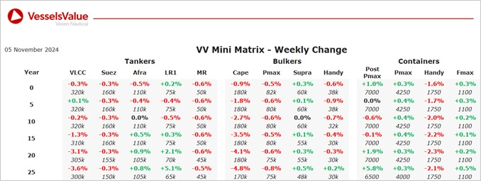

Bulkers: Bulker values remain stable this week, with a decline observed for older tonnage Capesizes
Capesize BC Hero (178,100 DWT, Jun 2010, Shanghai Waigaoqiao Shipbuilding) sold to undisclosed buyers for USD 26.5 mil, VV Value USD 28.41 mil
Supramax BC Medi Bangkok (53,500 DWT, Sep 2006, Imabari) sold to undisclosed buyers for USD 11.8 mil, VV Value USD 12.23 mil
Supramax BC Virono Pride (58,800 DWT, Apr 2009, Tsuneishi Cebu) sold undisclosed buyers for USD 15.2 mil, VV Value USD 15.05 mil
Handy BC Hupeh (39,200 DWT, Jul 2016, Chengxi Shipyard) sold to undisclosed buyers for 21 mil, VV Value USD 20.93 mil
Tankers:Tanker values remaining stable last week with older tonnage LR1s seeing an increase due to recent sales while older tonnage VLCCs see a decline in values
VLCC Taiga (311,100 DWT, Mar 2007, Mitsui Ichihara) sold to Unknown Chinese buyers for USD 44.2 mil, VV Value USD 44.91 mil
Post Panamax (Clean) Octa Lune (72,900 DWT, Feb 2005, Hyundai Heavy Ind Ulsan Shipyard) sold to undisclosed buyers for USD 22 mil, VV Value USD 20.82 mil
3 x Panamax (Dirty) Ice Energy, Ice Victory & Ice Fighter (70,400 DWT, 2006, Onomichi Dockyard) sold in an en bloc deal to Unknown Middle Eastern buyers for USD 72 mil, VV Value USD 70.81 mil
MR2 Jag Padma (48,000 DWT, Sep 2005, Iwagi Zosen) sold to undisclosed buyers with forward delivery in Q3 2025 for USD 17 mil, VV Value USD 17.7 mil
MR1 (Chemical/Product) Nina (40,400 DWT, Nov 2010, Santierul Naval Constantza) sold to Ancora Investment for USD 24 mil, VV Value USD 23.25 mil
Containers:Slight shifts for Container values this week, Feedermax newbuilds are still on the increase and mid-age Handys and Sub Panamax have come down
Handy Container Green Ace (1,740 TEU, 2005, Guangzhou Wechang) sold to MSC for USD 11.5mil, VV Value USD 11.97 mil
Feedermax Asian Moon (1,118 TEU, 2006, Jiangdong) sold to Greek buyers for USD 8.5 mil, VV Value USD 9.07 mil
